Data Preparation
Maîtriser les étapes de préparation d'un dataset avant de l'alimenter à un modèle de Machine Learning : doublons, valeurs manquantes, outliers, scaling, encodage, équilibrage des classes et sélection de features.
- Cheatsheet — Data Preparation
- ️ Récapitulatif — Erreurs clés à éviter
- 1) Rappels — Fondamentaux ML
- 2) Plan de la lecture — Étapes de préparation
- 3) Pourquoi préprocesser ?
- 4) (1) 👥 Doublons
- 5) (2) 🔮 Valeurs manquantes
- 6) (3) 🐳 Outliers
- 7) (4) 🔢 Feature Scaling
- 8) (5) ⚖️ Équilibrage du dataset
- 9) (6) 🔠 Encodage
- 10) (7) 🟨 Discrétisation
- 11) (8) 🟨 Création de features
- 12) (9) 🤖 Feature Selection & Permutation
- 13) Wrap-up — Règles d'or
- Ressources
Maîtriser les étapes de préparation d'un dataset avant de l'alimenter à un modèle de Machine Learning : doublons, valeurs manquantes, outliers, scaling, encodage, équilibrage des classes et sélection de features.
📋 Cheatsheet — Data Preparation
Doublons
data.duplicated().sum() # nombre de lignes dupliquées
data = data.drop_duplicates() # supprime les doublons (inplace possible)Valeurs manquantes
data.isnull().sum() # nombre de NaN par colonne
data.isnull().sum() / len(data) # pourcentage de NaN par colonne
data = data.drop(columns='col') # supprime la colonne (trop de NaN)
data.dropna(subset=['col']) # supprime les lignes où col est NaN
data['col'].replace(np.nan, 'valeur') # remplace NaN par une valeur métier
from sklearn.impute import SimpleImputer
imputer = SimpleImputer(strategy="mean") # stratégie : mean, median, most_frequent
imputer.fit(data[['col']]) # apprend la valeur sur le train
data['col'] = imputer.transform(data[['col']]) # applique la transformation
imputer.statistics_ # valeur apprise (ex: [3608796.2])Outliers
data[['col']].boxplot() # visualise les outliers
data['col'].min() # vérifie les valeurs aberrantes
boolean_mask = (data['col'] > 0) & (data['col'] < 5000) # masque booléen
data = data[boolean_mask].reset_index(drop=True) # applique le filtre et réindexeFeature Scaling
from sklearn.preprocessing import StandardScaler, MinMaxScaler, RobustScaler
## StandardScaler : centre à 0, std=1
scaler = StandardScaler()
scaler.fit(X_train[['col']]) # apprend mean et std sur le train
X_train['col'] = scaler.transform(X_train[['col']])
X_test['col'] = scaler.transform(X_test[['col']]) # même scaler sur le test !
## MinMaxScaler : compresse dans [0, 1]
mm_scaler = MinMaxScaler()
mm_scaler.fit(X_train[['col']])
X_train['col'] = mm_scaler.transform(X_train[['col']])
## RobustScaler : utilise median et IQR, robuste aux outliers
rb_scaler = RobustScaler()
rb_scaler.fit(data[['GrLivArea']]) # apprend median et IQR
data['GrLivArea'] = rb_scaler.transform(data[['GrLivArea']]) # applique la transformationEncodage catégoriel
from sklearn.preprocessing import OrdinalEncoder, OneHotEncoder, LabelEncoder
## OrdinalEncoder : catégories ordonnées → entier
ordinal_encoder = OrdinalEncoder(categories=[["bad","average","good"]])
ordinal_encoder.fit(df[['classes']]) # apprend les catégories
df['encoded'] = ordinal_encoder.transform(df[['classes']]) # bad=0, average=1, good=2
## OneHotEncoder : catégories non-ordonnées → colonnes binaires
ohe = OneHotEncoder(sparse_output=False)
ohe.fit(data[['Alley']])
data[ohe.get_feature_names_out()] = ohe.transform(data[['Alley']]) # crée Alley_Grvl, Alley_Pave...
data = data.drop(columns=['Alley']) # supprime la colonne originale
## OneHotEncoder binaire (drop si seulement 2 catégories)
ohe_bin = OneHotEncoder(sparse_output=False, drop="if_binary")
ohe_bin.fit(data[['Street']]) # si 2 valeurs → 1 seule colonne
## LabelEncoder : encode les targets (classification)
label_encoder = LabelEncoder()
label_encoder.fit(y) # apprend les classes
y_encoded = label_encoder.transform(y) # Adelie=0, Chinstrap=1, Gentoo=2
y_original = label_encoder.inverse_transform(y_encoded) # décode vers les nomsDiscrétisation
data['SalePriceBinary'] = pd.cut(
x=data['SalePrice'],
bins=[data['SalePrice'].min()-1, data['SalePrice'].mean(), data['SalePrice'].max()+1],
labels=['cheap', 'expensive']
) # convertit une variable continue en catégoriesCorrélation & Feature Selection
correlation_matrix = data.select_dtypes('number').corr() # matrice de corrélation Pearson
## Empiler et filtrer les paires les plus corrélées
corr_df = correlation_matrix.stack().reset_index()
corr_df.columns = ['feature_1', 'feature_2', 'correlation']
corr_df['absolute_correlation'] = np.abs(corr_df['correlation'])
corr_df.sort_values(by="absolute_correlation", ascending=False).head(10) # top paires
data = data.drop(columns=['Pesos']) # supprime la feature trop corrélée au targetFeature Permutation
from sklearn.inspection import permutation_importance
log_model = LogisticRegression().fit(X, y) # entraîne le modèle de base
permutation_score = permutation_importance(log_model, X, y, n_repeats=10) # permute chaque feature
importance_df = pd.DataFrame(np.vstack((X.columns, permutation_score.importances_mean)).T)
importance_df.columns = ['feature', 'score decrease']
importance_df.sort_values(by="score decrease", ascending=False) # features les + importantes en haut⚠️ Récapitulatif — Erreurs clés à éviter
Fitter scaler/encoder sur le test set
❌ scaler.fit(X_test) puis scaler.transform(X_test) — le scaler "voit" les données de test
✅ scaler.fit(X_train) → scaler.transform(X_train) et scaler.transform(X_test) — même scaler appris sur le train uniquement
Oversampler avant le train/test split
❌ Oversampler tout le dataset, puis splitter → des exemples synthétiques du train se retrouvent dans le test
✅ Splitter d'abord, puis oversampler uniquement le train set
Supprimer des NaN sans analyser leur signification métier
❌ data.dropna() sur toutes les colonnes sans vérification → perte d'information précieuse (ex: NaN = "pas d'allée")
✅ Analyser la cause des NaN, remplacer par une valeur métier ou utiliser SimpleImputer selon le contexte
Utiliser OrdinalEncoder sur des catégories non-ordonnées
❌ Encoder ['Chêne', 'Bouleau', 'Sapin'] avec OrdinalEncoder → crée une relation ordinale artificielle entre les espèces
✅ Utiliser OneHotEncoder pour les catégories sans ordre naturel
Scaler avant le cross-validation → Data Leakage
❌ scaler.fit_transform(X) sur tout le dataset, puis cross_val_score → chaque fold de validation a "vu" les données de tous les autres folds via le scaler
✅ Utiliser un Pipeline sklearn ou fitter le scaler manuellement à l'intérieur de chaque fold
1) Rappels — Fondamentaux ML
1.1 Régression vs Classification
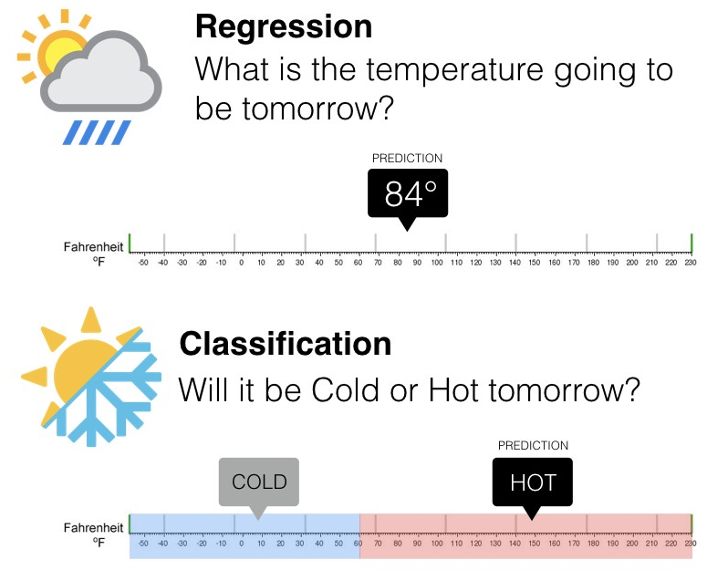
1.2 Workflow sklearn
from sklearn.some_module import SomeModel # importe le modèle
model = SomeModel() # instancie le modèle
model.fit(X_train, y_train) # entraîne sur le train set
model.score(X_test, y_test) # évalue sur le test set
model.predict(X_new) # prédit sur de nouvelles données1.3 Holdout Method
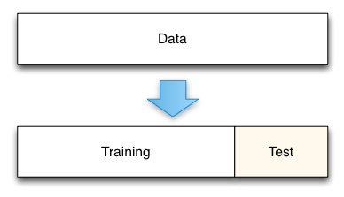
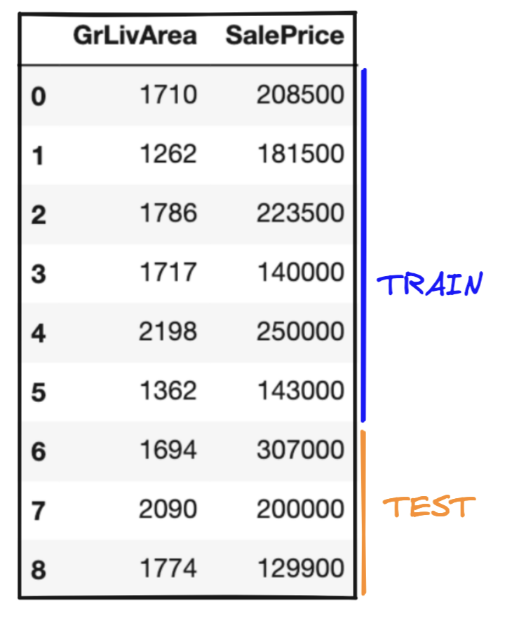
from sklearn.model_selection import train_test_split
X_train, X_test, y_train, y_test = train_test_split(
X, y,
test_size=0.3, # 30% pour le test
random_state=88 # reproductibilité
)1.4 K-Fold Cross Validation
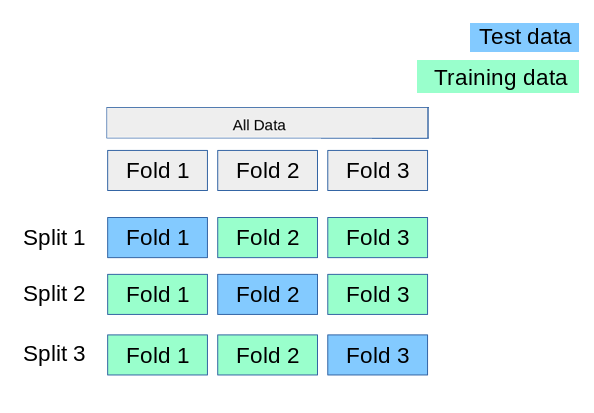
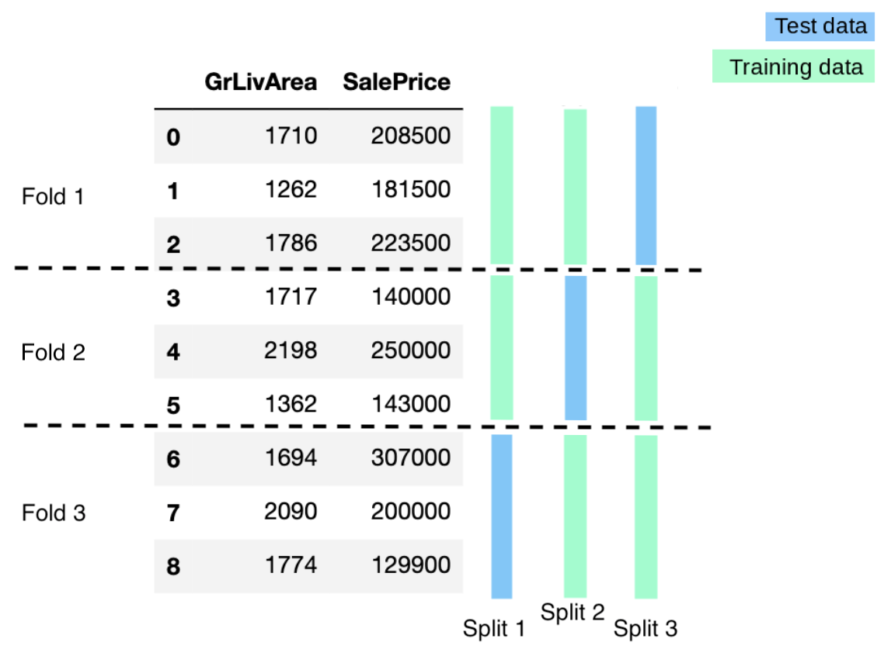
from sklearn.model_selection import cross_validate
cross_validate(model, X, y, cv=5)
## retourne : test_score, fit_time, score_time pour chaque fold1.5 Biais / Variance


2) Plan de la lecture — Étapes de préparation
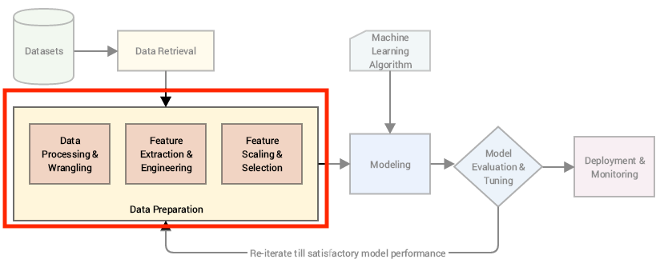
| # | Catégorie | Étape |
|---|---|---|
| 1 | Prérequis généraux | 👥 Doublons |
| 2 | Prérequis généraux | 🔮 Valeurs manquantes |
| 3 | Prérequis généraux | 🐳 Outliers |
| 4 | Colonnes numériques | 🔢 Scaling |
| 5 | Équilibrage | ⚖️ Balancing |
| 6 | Colonnes catégorielles | 🔠 Encodage |
| 7 | Colonnes catégorielles | 🟨 Discrétisation |
| 8 | Nouvelles features | 🟨 Feature creation |
| 9 | Sélection de features | 🤖 Feature selection & Permutation |
Dataset utilisé : Houses dataset — 👉 Télécharger le CSV — 👉 Description des features
3) Pourquoi préprocesser ?
- Les données brutes sont souvent sales (doublons, NaN, outliers)
- Les algorithmes ML ont des contraintes sur le format des données d'entrée
- Les transformations peuvent améliorer les performances du modèle

4) (1) 👥 Doublons
Des observations dupliquées présentes à la fois dans le train et le test set provoquent du data leakage et faussent l'évaluation des performances.
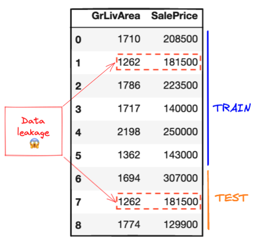
len(data) # nombre de lignes avant suppression → 1760
data.duplicated().sum() # nombre de lignes dupliquées → 303
data = data.drop_duplicates() # supprime les doublons
len(data) # nombre de lignes après suppression → 14575) (2) 🔮 Valeurs manquantes
5.1 Causes fréquentes
- Erreur de programmation
- Échec de mesure (ex: patient absent lors d'une visite clinique)
- Événement aléatoire (ex: capteur météo à court de batterie)
- Saisie incorrecte
5.2 Représentations courantes
NaN, 999, ?, ±∞, ""
5.3 Détection
data.isnull().sum().sort_values(ascending=False) # nombre de NaN par colonne
data.isnull().sum() / len(data) # pourcentage de NaN par colonne5.4 Stratégies selon le taux de NaN
Règle empirique :
- > 30% de NaN → envisager de supprimer la feature ou la ligne
- < 30% de NaN → imputer avec une stratégie adaptée
## Cas 1 : trop de NaN (~99%) → on drop la colonne
data = data.drop(columns='WallMat')
## Cas 2 : NaN = information métier (pas d'allée)
data.Alley = data.Alley.replace(np.nan, "NoAlley")
## Cas 3 : peu de NaN sur une variable numérique
## Option A : supprimer les lignes concernées
data.dropna(subset=['Pesos'])
## Option B : remplacer par la moyenne
data.Pesos.replace(np.nan, data.Pesos.mean())5.5 SimpleImputer (sklearn)
from sklearn.impute import SimpleImputer
## Instancie l'imputer avec la stratégie choisie
imputer = SimpleImputer(strategy="mean") # mean | median | most_frequent | constant
## Fit sur les données (apprend la valeur de remplacement)
imputer.fit(data[['Pesos']])
## Transform (remplace les NaN par la valeur apprise)
data['Pesos'] = imputer.transform(data[['Pesos']])
## Valeur apprise stockée dans l'attribut statistics_
imputer.statistics_ # → array([3608796.22])Les transformers sklearn fonctionnent toujours en deux étapes :
- .fit() : apprend et stocke les constantes (ex: la moyenne)
- .transform() : applique la transformation avec les constantes apprises
6) (3) 🐳 Outliers
Les outliers sont des points de données qui s'écartent fortement du reste des données.
6.1 Causes fréquentes
- Erreur de saisie
- Erreur de mesure
- Erreur de preprocessing
- Nouveauté (pas une erreur)
6.2 Impact des outliers
- Distorsion des distributions
- Biais sur les métriques de tendance centrale (moyenne, écart-type)
- Dégradation des performances ML
6.3 Détection — Boxplot
data[['GrLivArea']].boxplot() # visualise les outliers via la règle IQR
## Références documentation :
## 👉 pandas.DataFrame.boxplot
## 👉 matplotlib.pyplot.boxplot
## 👉 seaborn.boxplot6.4 Suppression des outliers
Un outlier peut être une nouveauté et non une erreur. Bien comprendre la signification métier avant de supprimer.
## Masque booléen : exclut les valeurs absurdes et les grandes propriétés
boolean_mask = (data['GrLivArea'] > 0) & (data['GrLivArea'] < 5000)
## Applique le filtre et réinitialise l'index
data = data[boolean_mask].reset_index(drop=True)7) (4) 🔢 Feature Scaling
Le scaling transforme les features numériques vers une plage de valeurs commune et réduite.
7.1 Pourquoi scaler ?
- Des features avec de grandes magnitudes peuvent dominer les autres de façon artificielle
- Améliore l'efficacité computationnelle
- Améliore l'interprétabilité de l'impact de chaque feature
7.2 Les trois principaux scalers
| Scaler | Formule | Avantages | Limites |
|---|---|---|---|
StandardScaler | $z = \frac{x - \mu}{\sigma}$ | Efficace sur distribution normale | Sensible aux outliers |
MinMaxScaler | $X' = \frac{X - X_{min}}{X_{max} - X_{min}}$ | Plage fixe $[0, 1]$, préserve la sparsité | Très sensible aux outliers |
RobustScaler | $X' = \frac{x - \text{median}}{IQR}$ | Robuste aux outliers (median + IQR) | Plage non garantie |
7.3 StandardScaler
$z = \frac{x - \mu}{\sigma}$
La distribution devient centrée en 0 avec un écart-type de 1. 99% des valeurs d'une distribution gaussienne se situent dans $[\mu - 3\sigma, \mu + 3\sigma] = [-3, +3]$ après standardisation.
👉 sklearn.preprocessing.StandardScaler
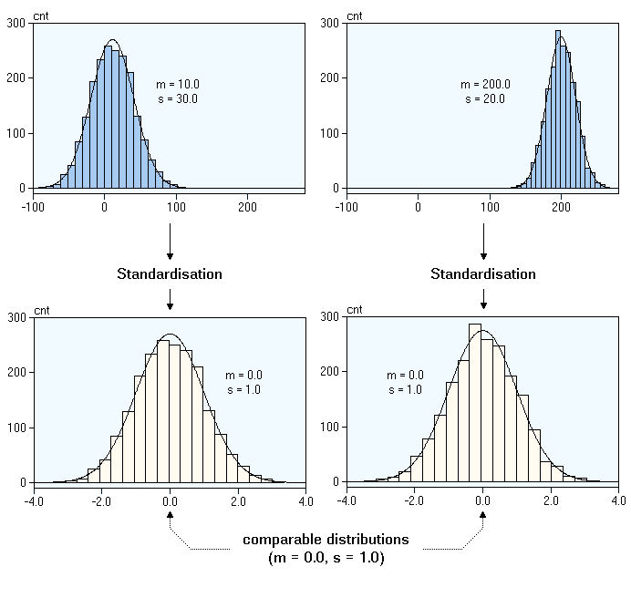
7.4 MinMaxScaler
$X' = \frac{X - X_{min}}{X_{max} - X_{min}}$
Les valeurs sont compressées dans $[0, 1]$. Recommandé pour les features ordinales, les matrices positives/sparses, et l'algorithme KNN.
👉 sklearn.preprocessing.MinMaxScaler
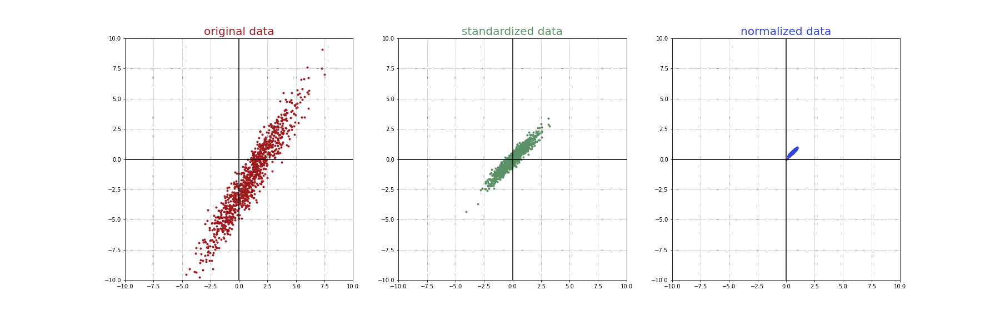
7.5 RobustScaler
$X' = \frac{x - \text{median}}{IQR}$
Utilise la médiane et l'IQR ($Q3 - Q1$), moins sensibles aux outliers que la moyenne et l'écart-type.
👉 sklearn.preprocessing.RobustScaler
7.6 Application pratique
from sklearn.preprocessing import RobustScaler
## Étape 0 : instancier le scaler
rb_scaler = RobustScaler()
## Étape 1 : fitter sur les données (apprend median et IQR)
rb_scaler.fit(data[['GrLivArea']])
## Étape 2 : transformer (applique (valeur - median) / IQR)
data['GrLivArea'] = rb_scaler.transform(data[['GrLivArea']])7.7 Règles d'usage
- Feature très skewed → Feature Engineering d'abord (ex: log(feature))
- Feature skewed avec outliers → RobustScaler
- Sinon → StandardScaler (valeur par défaut sûre)
- Matrice positive ou sparse (ex: pixels RGB) → MinMaxScaler
8) (5) ⚖️ Équilibrage du dataset
Un déséquilibre de classes (ex: 70/30) peut amener le modèle à mal prédire la classe minoritaire.
8.1 Exemples de déséquilibre
- 🦠 Prévalence d'une maladie
- 💳 Détection de fraude bancaire
- 🛍️ Taux de conversion e-commerce
8.2 Stratégies
- Oversampling : dupliquer les instances de la classe minoritaire
- Undersampling : sous-échantillonner la classe majoritaire
- SMOTE : générer de nouvelles instances synthétiques
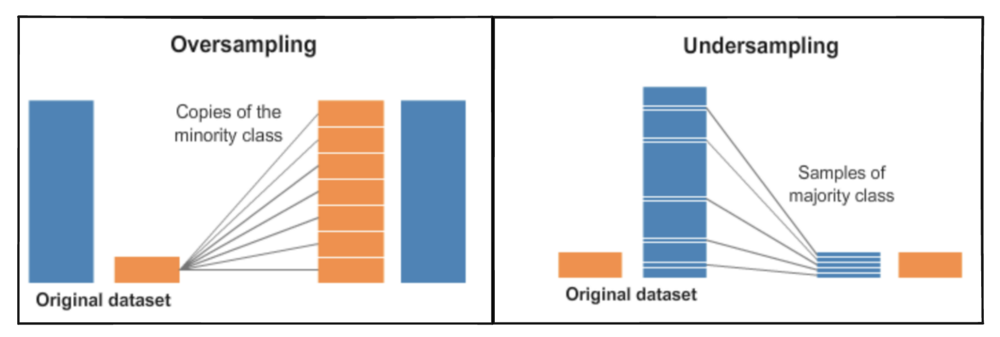
8.3 SMOTE — Synthetic Minority Oversampling Technique
SMOTE génère de nouvelles instances minoritaires par combinaisons linéaires de points existants.


👉 Documentation imbalanced-learn SMOTE
pip install imbalanced-learnOrdre correct : 1) Train/test split → 2) Oversampler uniquement le train → 3) Évaluer sur le test sans oversampling
9) (6) 🔠 Encodage
L'encodage transforme des données non-numériques en forme numérique equivalente.
9.1 OrdinalEncoder — catégories ordonnées
Assigne un entier à chaque catégorie. À utiliser uniquement si les catégories ont un ordre naturel.
👉 sklearn.preprocessing.OrdinalEncoder
from sklearn.preprocessing import OrdinalEncoder
## Spécifier l'ordre des catégories explicitement
ordinal_encoder = OrdinalEncoder(categories=[["bad", "average", "good"]])
ordinal_encoder.fit(example[["classes"]])
## Afficher les catégories apprises
ordinal_encoder.categories_ # → [array(['bad', 'average', 'good'])]
## Transformer : bad=0, average=1, good=2
example["encoded_classes"] = ordinal_encoder.transform(example[["classes"]])Ne pas utiliser OrdinalEncoder pour des catégories sans ordre (ex: types d'arbres) : cela crée une fausse relation ordinale.
9.2 OneHotEncoder — catégories non-ordonnées
Crée une colonne binaire pour chaque catégorie possible.
👉 sklearn.preprocessing.OneHotEncoder
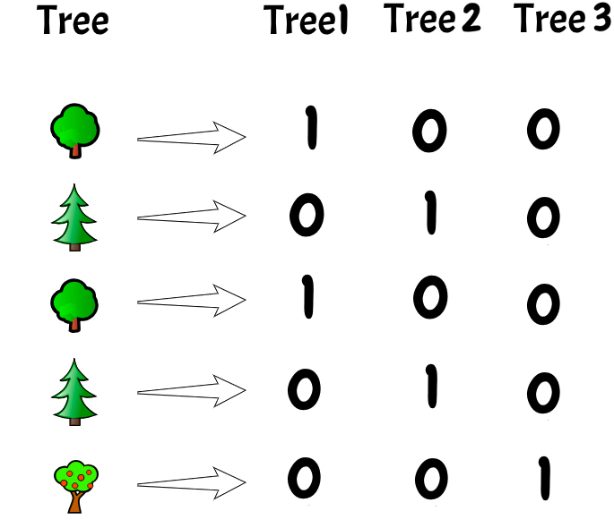
from sklearn.preprocessing import OneHotEncoder
## Encodage multi-classes (3 valeurs → 3 colonnes)
ohe = OneHotEncoder(sparse_output=False)
ohe.fit(data[['Alley']])
ohe.categories_ # → [array(['Grvl', 'NoAlley', 'Pave'])]
ohe.get_feature_names_out() # → ['Alley_Grvl', 'Alley_NoAlley', 'Alley_Pave']
data[ohe.get_feature_names_out()] = ohe.transform(data[['Alley']])
data = data.drop(columns=["Alley"]) # supprime la colonne originale
## Encodage binaire (2 valeurs → 1 seule colonne avec drop="if_binary")
ohe_bin = OneHotEncoder(sparse_output=False, drop="if_binary")
ohe_bin.fit(data[['Street']])
data[ohe_bin.get_feature_names_out()] = ohe_bin.transform(data[['Street']])
data = data.drop(columns=["Street"])9.3 LabelEncoder — encoder les targets
Pour les tâches de classification où le target est catégoriel.
👉 sklearn.preprocessing.LabelEncoder
from sklearn.preprocessing import LabelEncoder
label_encoder = LabelEncoder()
label_encoder.fit(target) # apprend les classes
label_encoder.classes_ # → ['Adelie', 'Chinstrap', 'Gentoo']
encoded_target = label_encoder.transform(target) # Adelie=0, Chinstrap=1, Gentoo=2
original_target = label_encoder.inverse_transform(encoded_target) # décodeLa plupart des modèles sklearn gèrent nativement les targets non-encodés. Vérifier d'abord si l'encodage est réellement nécessaire avant de l'appliquer.
10) (7) 🟨 Discrétisation
La discrétisation transforme une variable continue en variable discrète via des intervalles (bins). Elle permet de transformer une tâche de régression en classification.
## Séparer les maisons en "cheap" / "expensive" selon le prix moyen
data['SalePriceBinary'] = pd.cut(
x=data['SalePrice'],
bins=[
data['SalePrice'].min() - 1, # borne inférieure
data['SalePrice'].mean(), # seuil de séparation = prix moyen
data['SalePrice'].max() + 1 # borne supérieure
],
labels=['cheap', 'expensive']
)11) (8) 🟨 Création de features
Introduire de la connaissance métier pour créer de nouveaux signaux utiles au modèle.
11.1 Exemples
bedroom_totalroom_ratio= ratio chambres / total pièces- $BMI = \frac{weight}{height^2}$
delivered_date - dispatch_date= délai de livraison- Catégoriser une
dateenweekdayouweekend
L'encodage, la discrétisation et la création de features font partie du Feature Engineering. 👉 sklearn.preprocessing — toutes les options
12) (9) 🤖 Feature Selection & Permutation

La sélection de features élimine les features non-informatives pour réduire la complexité du modèle.
12.1 Pourquoi sélectionner les features ?
- 🚮 Garbage in → garbage out : des features de mauvaise qualité génèrent du bruit
- 💥 Malédiction de la dimensionnalité : le volume de données nécessaire croît exponentiellement avec le nombre de features
- 🤯 Réduction de complexité : modèle plus interprétable, plus rapide, plus facile à maintenir
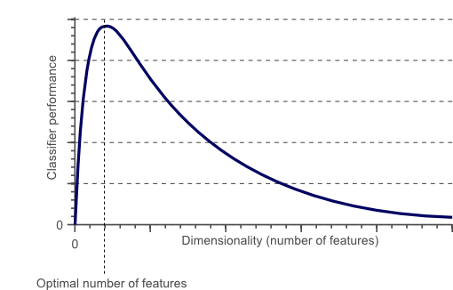
12.2 Corrélation entre features
Les features très corrélées entre elles sont redondantes → supprimer l'une des deux.
import seaborn as sns
## Heatmap des corrélations Pearson
correlation_matrix = data.select_dtypes('number').corr()
sns.heatmap(correlation_matrix, cmap="bwr") # rouge = corrélation positive, bleu = négative
## Identifier les paires les plus corrélées
corr_df = correlation_matrix.stack().reset_index()
corr_df.columns = ['feature_1', 'feature_2', 'correlation']
corr_df = corr_df[corr_df['feature_1'] != corr_df['feature_2']] # exclut auto-corrélation
corr_df['absolute_correlation'] = np.abs(corr_df['correlation'])
corr_df.sort_values(by="absolute_correlation", ascending=False).head(10)
## Supprimer la feature redondante (ex: Pesos ≈ SalePrice)
data = data.drop(columns=['Pesos'])12.3 Feature Permutation
L'algorithme évalue l'importance de chaque feature en mesurant la chute de score lorsqu'on la mélange aléatoirement.
Fonctionnement :
- Entraîne un modèle de base, enregistre le score
- Mélange aléatoirement une feature dans le test set
- Enregistre le nouveau score
- Si le score chute → la feature est importante
- Répète pour chaque feature
👉 sklearn.inspection.permutation_importance
from sklearn.inspection import permutation_importance
## Entraîne le modèle
log_model = LogisticRegression().fit(X, y)
## Calcule l'importance par permutation
permutation_score = permutation_importance(log_model, X, y, n_repeats=10)
## Affiche les résultats sous forme de DataFrame
importance_df = pd.DataFrame(
np.vstack((X.columns, permutation_score.importances_mean)).T
)
importance_df.columns = ['feature', 'score decrease']
importance_df.sort_values(by="score decrease", ascending=False) # top features12.4 Modélisation finale
from sklearn.preprocessing import LabelEncoder, MinMaxScaler
from sklearn.linear_model import LogisticRegression
from sklearn.model_selection import cross_val_score
## Encoder le target
target_encoder = LabelEncoder().fit(data['SalePriceBinary'])
y = target_encoder.transform(data['SalePriceBinary'])
## Définir les features
X = data.drop(columns=['SalePrice', 'SalePriceBinary'])
## Scaler les features numériques restantes
minmax_scaler = MinMaxScaler()
X[["BedroomAbvGr", "KitchenAbvGr", "OverallCond"]] = minmax_scaler.fit_transform(
X[["BedroomAbvGr", "KitchenAbvGr", "OverallCond"]]
)
## Évaluer en cross-validation
log_reg = LogisticRegression(max_iter=1000)
scores = cross_val_score(log_reg, X, y, cv=10)
scores.mean() # → ~0.83Data Leakage via le scaling : scaler sur tout le dataset avant la cross-validation revient à faire "fuiter" l'information des folds de validation dans les folds d'entraînement. Solution : utiliser un Pipeline sklearn.
13) Wrap-up — Règles d'or
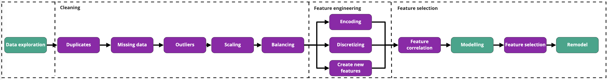
Toutes les transformations appliquées au train set doivent être exactement reproduites sur le test set (et les nouvelles données).
## Pattern correct pour scaler/encoder
transformer = Transformer()
transformer.fit(X_train) # fit uniquement sur le train
X_train_transformed = transformer.transform(X_train) # transforme le train
X_test_transformed = transformer.transform(X_test) # même transformer sur le testNe jamais appeler .fit() sur le test set — utiliser uniquement .transform() avec le transformer appris sur le train.
Loi de Pareto : 20% des features expliquent souvent 80% de la performance. Réduire le nombre de features rend le modèle plus interprétable, plus rapide et plus facile à maintenir en production.
📚 Ressources
👉 sklearn.impute.SimpleImputer
👉 sklearn.preprocessing.StandardScaler
👉 sklearn.preprocessing.MinMaxScaler
👉 sklearn.preprocessing.RobustScaler
👉 sklearn.preprocessing.OrdinalEncoder
👉 sklearn.preprocessing.OneHotEncoder
👉 sklearn.preprocessing.LabelEncoder
- 🧭 Introduction
- 1. Pourquoi préparer les données ?
- 2. Doublons
- 3. Valeurs manquantes
- 4. Outliers (valeurs aberrantes)
- 5. Feature Scaling (mise à l'échelle)
- 6. Equilibrage des classes
- 7. Encodage catégoriel
- 8. Discretisation
- 9. Creation de features
- 10. Sélection de features
- 11. Récapitulatif — Les erreurs classiques à ne jamais faire
- 🎯 Questions de vérification
- 📌 TL;DR
🧭 Introduction
Avant de donner des données à un modèle de Machine Learning, il faut les préparer. Les données brutes du monde réel sont rarement propres : il y a des lignes en double, des valeurs manquantes, des chiffres aberrants, des textes là où le modèle attend des nombres...
C'est exactement comme préparer des légumes avant de cuisiner : on lave, on épluche, on coupe, on retire les parties abimées — et seulement ensuite on fait cuire. Si on met des légumes pourris dans la casserole, le plat sera raté, peu importe la qualité de la recette.
A retenir :
- Un modèle ML n'accepte que des nombres en entrée — les textes et les catégories doivent être convertis.
- Des données mal nettoyées produisent de mauvaises prédictions : "Garbage in, garbage out".
- On apprend toujours les transformations sur le train set et on les applique ensuite au test set — jamais l'inverse.
- Il y a un ordre logique : d'abord nettoyer (doublons, valeurs manquantes, outliers), puis transformer (scaling, encodage).
- La sélection de features à la fin permet d'alléger le modèle en supprimant ce qui ne sert à rien.
Mini-plan du cours :
- Doublons
- Valeurs manquantes
- Outliers (valeurs aberrantes)
- Feature Scaling (mise à l'échelle)
- Equilibrage des classes
- Encodage (transformer du texte en nombres)
- Discretisation
- Creation de features
- Sélection de features
1. Pourquoi préparer les données ?
Les données brutes posent trois problèmes majeurs :
- Elles sont sales : doublons, valeurs manquantes, valeurs aberrantes.
- Elles ont des formats incompatibles : les algorithmes ML ne comprennent pas les mots comme "rouge" ou "bon" — il faut les convertir en chiffres.
- Certaines transformations améliorent les performances du modèle : par exemple, remettre toutes les colonnes sur la même échelle évite qu'une colonne avec de grands chiffres "écrase" les autres.
Le preprocessing, c'est le travail invisible qui fait la différence entre un bon et un mauvais modèle. En pratique, il représente souvent 70 à 80 % du temps d'un data scientist.
2. Doublons
Qu'est-ce qu'un doublon ?
Un doublon, c'est une ligne qui apparait plusieurs fois dans le dataset. Par exemple, si la même maison est enregistrée deux fois avec exactement les mêmes informations.
Pourquoi c'est un problème ? Si cette ligne se retrouve à la fois dans le train set et dans le test set, le modèle "voit" la réponse pendant l'entrainement. On appelle ça du data leakage (fuite de données) — les performances semblent bonnes, mais elles sont truquées.
Comment les gérer ?
# Compter le nombre de lignes au départ
len(data) # exemple : 1760 lignes
# Compter combien de lignes sont dupliquées
data.duplicated().sum() # exemple : 303 doublons
# Supprimer les doublons (garde la première occurrence)
data = data.drop_duplicates()
# Vérifier le résultat
len(data) # exemple : 1457 lignes restantesToujours commencer par cette étape — c'est rapide et ça peut éviter de grosses erreurs d'évaluation.
3. Valeurs manquantes
Qu'est-ce qu'une valeur manquante ?
C'est une case vide dans le tableau. En Python/pandas, elle est représentée par NaN (Not a Number). Elle peut aussi se cacher sous des formes comme 999, ?, ou une chaine vide "".
Pourquoi des valeurs manquent ?
- Un capteur est tombé en panne.
- Un patient n'est pas venu à sa visite médicale.
- Quelqu'un a oublié de remplir un champ de formulaire.
- La valeur n'a pas de sens (ex : pas d'allée = la colonne "type d'allée" est vide).
Détection
# Compter les NaN dans chaque colonne
data.isnull().sum().sort_values(ascending=False)
# Calculer le pourcentage de NaN par colonne
data.isnull().sum() / len(data)Stratégies de traitement
Il n'y a pas une seule bonne réponse — ça dépend du contexte :
Règle empirique : si une colonne a plus de 30 % de valeurs manquantes, envisager de la supprimer entièrement. En dessous de 30 %, on peut imputer (remplacer par une valeur calculée).
import numpy as np
# Cas 1 : la colonne est presque vide (99 % de NaN) → on la supprime
data = data.drop(columns='WallMat')
# Cas 2 : NaN signifie quelque chose (ex: pas d'allée) → valeur métier
data['Alley'] = data['Alley'].replace(np.nan, "NoAlley")
# Cas 3 : peu de NaN sur une colonne numérique
# Option A : supprimer les lignes concernées
data = data.dropna(subset=['Pesos'])
# Option B : remplacer par la moyenne
data['Pesos'] = data['Pesos'].replace(np.nan, data['Pesos'].mean())SimpleImputer — la méthode sklearn
Sklearn propose un outil dédié appelé SimpleImputer. Il suit la logique .fit() puis .transform() commune à tous les transformers sklearn :
.fit(): il apprend la valeur de remplacement (ex : calcule la moyenne sur le train set)..transform(): il remplace les NaN par la valeur apprise.
from sklearn.impute import SimpleImputer
# Créer l'imputer — stratégie possible : "mean", "median", "most_frequent", "constant"
imputer = SimpleImputer(strategy="mean") # on remplacera par la moyenne
# Fit : l'imputer calcule la moyenne de la colonne 'Pesos' sur les données d'entrainement
imputer.fit(data[['Pesos']])
# Transform : remplace les NaN par la moyenne calculée
data['Pesos'] = imputer.transform(data[['Pesos']])
# Vérifier la valeur apprise (stockée dans l'attribut statistics_)
imputer.statistics_ # → array([3608796.22]) — c'est la moyenne calculéeOn fit toujours l'imputer sur le train set uniquement. Ensuite on utilise ce même imputer (sans refaire de fit) pour transformer le test set. Si on re-fittait sur le test set, on calculerait une moyenne différente — ce serait du data leakage.
4. Outliers (valeurs aberrantes)
Qu'est-ce qu'un outlier ?
Un outlier est une valeur qui s'écarte fortement des autres. Par exemple, dans une colonne "surface habitable", une valeur de 50 000 m² serait aberrante pour une maison individuelle.
Causes fréquentes :
- Erreur de saisie (ex : taper 10000 au lieu de 100).
- Erreur de mesure (capteur défaillant).
- Cas réel mais exceptionnel (une vraie immense villa — ce n'est pas une erreur, mais c'est rare).
Pourquoi c'est un problème ?
Un outlier fausse les statistiques (il tire la moyenne vers lui) et peut dégrader les performances du modèle.
Détecter les outliers avec un boxplot
Le boxplot est un graphique qui affiche visuellement les valeurs "en dehors des moustaches" — ce sont les outliers selon la règle de l'IQR.
# Afficher un boxplot pour la colonne GrLivArea (surface habitable)
data[['GrLivArea']].boxplot() # les points isolés en dehors des moustaches = outliersSupprimer les outliers
On utilise un masque booléen : on définit une condition qui garde uniquement les valeurs raisonnables.
# Définir le masque : garder seulement les surfaces entre 0 et 5000 m²
boolean_mask = (data['GrLivArea'] > 0) & (data['GrLivArea'] < 5000)
# Appliquer le filtre et réinitialiser l'index (les numéros de lignes)
data = data[boolean_mask].reset_index(drop=True)Avant de supprimer un outlier, réfléchir à ce qu'il signifie. Une grande villa est un cas réel — si on la supprime, le modèle ne saura pas gérer ce type de maison. Ne supprimer que ce qui ressemble à une erreur.
5. Feature Scaling (mise à l'échelle)
Pourquoi mettre à l'échelle ?
Imagine deux colonnes dans ton dataset :
nb_chambres: entre 1 et 10.prix: entre 50 000 et 1 000 000.
Sans mise à l'échelle, la colonne prix "écrase" la colonne nb_chambres dans les calculs du modèle — juste parce qu'elle a des valeurs plus grandes. Pourtant, les deux informations peuvent être tout aussi importantes.
Le scaling remet toutes les colonnes sur une plage comparable.
Les trois scalers principaux
| Scaler | Ce qu'il fait | Quand l'utiliser |
|---|---|---|
StandardScaler | Centre à 0, écart-type = 1 | Distribution normale, cas général |
MinMaxScaler | Compresse dans [0, 1] | Données positives, images (pixels), KNN |
RobustScaler | Utilise médiane et IQR | Quand il y a des outliers |
StandardScaler — standardisation
La formule de la standardisation (z-score) :
Ou $\mu$ est la moyenne de la colonne et $\sigma$ est l'ecart-type.
Exemple numérique : Si une colonne a une moyenne $\mu = 100$ et un écart-type $\sigma = 20$ :
- La valeur 120 devient : $z = \frac{120 - 100}{20} = 1.0$
- La valeur 60 devient : $z = \frac{60 - 100}{20} = -2.0$
Après transformation, 99 % des valeurs se situent entre -3 et +3.
MinMaxScaler — normalisation min-max
La formule du min-max scaling :
Exemple numérique : Si $X_{min} = 0$ et $X_{max} = 200$ :
- La valeur 50 devient : $X' = \frac{50 - 0}{200 - 0} = 0.25$
- La valeur 200 devient : $X' = \frac{200 - 0}{200 - 0} = 1.0$
RobustScaler — résistant aux outliers
La formule du RobustScaler :
Ou $IQR = Q3 - Q1$ est l'écart interquartile. Il utilise la médiane (moins sensible aux outliers que la moyenne) et l'IQR (moins sensible que l'écart-type).
Application pratique
from sklearn.preprocessing import RobustScaler
# Etape 1 : créer le scaler
rb_scaler = RobustScaler()
# Etape 2 : fit sur le TRAIN set (apprend la médiane et l'IQR)
rb_scaler.fit(X_train[['GrLivArea']])
# Etape 3 : transformer le train set
X_train['GrLivArea'] = rb_scaler.transform(X_train[['GrLivArea']])
# Etape 4 : transformer le test set avec LE MEME scaler (pas de re-fit !)
X_test['GrLivArea'] = rb_scaler.transform(X_test[['GrLivArea']])La règle d'or : on ne fait JAMAIS .fit() sur le test set. On apprend la transformation sur le train, puis on l'applique mécaniquement au test. Si on fittait sur le test set, le modèle "verrait" les données de test pendant l'entrainement — c'est du data leakage.
Comment choisir son scaler ?
- Distribution très asymétrique (skewed) avec outliers → RobustScaler
- Images, pixels, matrices positives → MinMaxScaler
- Distribution normale, cas général → StandardScaler (choix par défaut sûr)
6. Equilibrage des classes
Qu'est-ce qu'un déséquilibre de classes ?
En classification, quand une catégorie est beaucoup plus représentée que l'autre, on parle de déséquilibre de classes.
Exemples concrets :
- Détection de fraude bancaire : 99,9 % des transactions sont légitimes, 0,1 % sont frauduleuses.
- Diagnostic médical : 95 % de patients sains, 5 % malades.
Pourquoi c'est un problème ? Le modèle peut apprendre à toujours prédire "pas de fraude" et obtenir 99,9 % de précision — mais rater toutes les vraies fraudes. C'est inutile en pratique.
Stratégies d'équilibrage
- Oversampling : dupliquer des exemples de la classe minoritaire.
- Undersampling : réduire la classe majoritaire.
- SMOTE : créer de nouveaux exemples synthétiques (artificiels mais plausibles) de la classe minoritaire en interpolant entre des exemples existants.
SMOTE (Synthetic Minority Oversampling Technique) est la méthode la plus sophistiquée : au lieu de juste copier des lignes, il crée de nouvelles lignes en "mélangeant" deux exemples voisins de la classe minoritaire.
# Installer la librairie imbalanced-learn
pip install imbalanced-learnOrdre critique à respecter :
1. Faire le train/test split EN PREMIER.
2. Appliquer le rééquilibrage (SMOTE, oversampling) UNIQUEMENT sur le train set.
3. Evaluer sur le test set SANS rééquilibrage.
Si on fait l'inverse (rééquilibrer d'abord, splitter ensuite), des exemples synthétiques du train se retrouvent dans le test set — l'évaluation serait faussée.
7. Encodage catégoriel
Pourquoi encoder ?
Les modèles ML ne comprennent que les nombres. Les colonnes texte comme "bon", "mauvais", "Gravier", "Pavé" doivent être converties en chiffres.
Il y a deux cas très différents :
- Les catégories ont un ordre naturel (ex : mauvais < moyen < bon) → OrdinalEncoder.
- Les catégories n'ont pas d'ordre (ex : types de revêtement de route) → OneHotEncoder.
OrdinalEncoder — catégories ordonnées
Assigne un entier à chaque catégorie en respectant l'ordre que tu spécifies.
from sklearn.preprocessing import OrdinalEncoder
# Créer l'encoder en précisant l'ordre des catégories (du plus petit au plus grand)
ordinal_encoder = OrdinalEncoder(categories=[["bad", "average", "good"]])
# Fit : l'encoder apprend les catégories
ordinal_encoder.fit(example[["classes"]])
# Vérifier les catégories apprises
ordinal_encoder.categories_ # → [array(['bad', 'average', 'good'])]
# Transform : bad → 0, average → 1, good → 2
example["encoded_classes"] = ordinal_encoder.transform(example[["classes"]])Ne jamais utiliser OrdinalEncoder pour des catégories sans ordre naturel. Par exemple, encoder "Chêne", "Bouleau", "Sapin" en 0, 1, 2 dirait implicitement au modèle que "Sapin > Bouleau > Chêne", ce qui est faux. Utiliser OneHotEncoder dans ce cas.
OneHotEncoder — catégories sans ordre
Crée une nouvelle colonne binaire (0 ou 1) pour chaque catégorie possible. Si la colonne "Allée" peut valoir "Gravier", "Pavé" ou "Pas d'allée", on crée trois nouvelles colonnes :
| Allée_Gravier | Allée_Pavé | Allée_PasDAllée |
|---|---|---|
| 1 | 0 | 0 |
| 0 | 1 | 0 |
| 0 | 0 | 1 |
from sklearn.preprocessing import OneHotEncoder
# Créer l'encoder (sparse_output=False pour obtenir un tableau classique)
ohe = OneHotEncoder(sparse_output=False)
# Fit : apprend les catégories présentes dans la colonne 'Alley'
ohe.fit(data[['Alley']])
# Voir les catégories trouvées
ohe.categories_ # → [array(['Grvl', 'NoAlley', 'Pave'])]
# Voir les noms des nouvelles colonnes
ohe.get_feature_names_out() # → ['Alley_Grvl', 'Alley_NoAlley', 'Alley_Pave']
# Ajouter les nouvelles colonnes au DataFrame
data[ohe.get_feature_names_out()] = ohe.transform(data[['Alley']])
# Supprimer la colonne originale (devenue inutile)
data = data.drop(columns=["Alley"])Cas spécial : colonne binaire (seulement 2 valeurs)
Si la colonne n'a que 2 valeurs possibles, une seule nouvelle colonne suffit (la seconde serait redondante — si ce n'est pas 0, c'est forcément 1).
# drop="if_binary" : crée 1 seule colonne au lieu de 2 quand il y a exactement 2 valeurs
ohe_bin = OneHotEncoder(sparse_output=False, drop="if_binary")
ohe_bin.fit(data[['Street']]) # 2 valeurs : Grvl et Pave
data[ohe_bin.get_feature_names_out()] = ohe_bin.transform(data[['Street']])
data = data.drop(columns=["Street"])LabelEncoder — encoder la cible (y)
Quand la variable cible (celle qu'on veut prédire) est textuelle, on utilise le LabelEncoder.
from sklearn.preprocessing import LabelEncoder
label_encoder = LabelEncoder()
# Fit : apprend les noms de classes
label_encoder.fit(target)
label_encoder.classes_ # → ['Adelie', 'Chinstrap', 'Gentoo']
# Transform : Adelie → 0, Chinstrap → 1, Gentoo → 2
encoded_target = label_encoder.transform(target)
# Inverse transform : retrouver les noms originaux depuis les chiffres
original_target = label_encoder.inverse_transform(encoded_target)Beaucoup de modèles sklearn acceptent directement les targets textuels sans avoir besoin de LabelEncoder. Vérifier la documentation du modèle avant d'encoder — si ce n'est pas nécessaire, ne pas le faire.
8. Discretisation
Transformer une variable continue en catégories
La discretisation consiste à découper une variable continue (comme un prix) en intervalles, et à attribuer une étiquette à chaque intervalle. Cela permet de transformer un problème de régression en classification.
Exemple : On veut prédire si une maison est "cheap" (bon marché) ou "expensive" (chère). On utilise le prix moyen comme seuil.
# pd.cut() découpe la colonne SalePrice en intervalles et leur attribue un label
data['SalePriceBinary'] = pd.cut(
x=data['SalePrice'], # la colonne à découper
bins=[
data['SalePrice'].min() - 1, # borne inférieure (en dessous du min)
data['SalePrice'].mean(), # seuil de coupure = prix moyen
data['SalePrice'].max() + 1 # borne supérieure (au dessus du max)
],
labels=['cheap', 'expensive'] # étiquette pour chaque intervalle
)9. Creation de features
Apporter de la connaissance métier
Parfois, les colonnes brutes ne sont pas les meilleures entrées pour le modèle. On peut créer de nouvelles colonnes à partir des existantes, en apportant de la connaissance sur le problème.
Exemples de features créées :
bedroom_totalroom_ratio= nombre de chambres / nombre total de pièces (donne une idée de la configuration de la maison).- $BMI = \frac{poids}{taille^2}$ (indice de masse corporelle — plus utile que poids et taille séparément).
delai_livraison= date de livraison - date d'expédition.- Catégoriser une date en "semaine" ou "week-end".
L'encodage, la discretisation et la creation de features font tous partie du Feature Engineering — l'art de transformer les données brutes en signaux utiles pour le modèle. C'est souvent ici que se fait la vraie différence entre un bon et un excellent modèle.
10. Sélection de features
Pourquoi supprimer des features ?
Plus on a de features, plus le modèle a de "bruit" à gérer. Deux problèmes principaux :
- Features redondantes : si deux colonnes sont très corrélées (ex : "surface totale" et "surface habitable"), l'une d'elles n'apporte rien de plus. On peut en supprimer une.
- Malédiction de la dimensionnalité : avec trop de features, le modèle a besoin de beaucoup plus de données pour apprendre correctement, et devient plus lent et moins interprétable.
Corrélation entre features
On calcule la matrice de corrélation — un tableau qui mesure à quel point chaque paire de colonnes varie ensemble.
import seaborn as sns
import numpy as np
# Calculer la matrice de corrélation de Pearson (uniquement les colonnes numériques)
correlation_matrix = data.select_dtypes('number').corr()
# Afficher sous forme de heatmap (rouge = corrélation positive, bleu = négative)
sns.heatmap(correlation_matrix, cmap="bwr")
# Mettre la matrice sous forme de paires pour identifier les plus corrélées
corr_df = correlation_matrix.stack().reset_index() # transformer en lignes
corr_df.columns = ['feature_1', 'feature_2', 'correlation']
# Exclure les auto-corrélations (une feature avec elle-même = 1.0)
corr_df = corr_df[corr_df['feature_1'] != corr_df['feature_2']]
# Ajouter la valeur absolue (une corrélation de -0.9 est aussi forte que +0.9)
corr_df['absolute_correlation'] = np.abs(corr_df['correlation'])
# Afficher les 10 paires les plus corrélées
corr_df.sort_values(by="absolute_correlation", ascending=False).head(10)
# Si 'Pesos' est presque identique à 'SalePrice' → la supprimer (redondante)
data = data.drop(columns=['Pesos'])Feature Permutation — mesurer l'importance réelle
L'idée est simple : si on mélange aléatoirement les valeurs d'une colonne et que le score du modèle chute beaucoup, c'est que cette colonne était importante. Si le score ne change presque pas, la colonne est peu utile.
Fonctionnement pas à pas :
- Entrainer un modèle et noter son score.
- Prendre une feature, mélanger aléatoirement ses valeurs (les relier au hasard avec d'autres lignes).
- Calculer le nouveau score — la chute = l'importance de la feature.
- Répéter pour chaque feature.
from sklearn.inspection import permutation_importance
from sklearn.linear_model import LogisticRegression
import pandas as pd
import numpy as np
# Entrainer un modèle de base
log_model = LogisticRegression().fit(X, y) # modèle de régression logistique
# Calculer l'importance par permutation (n_repeats = répéter 10 fois pour plus de stabilité)
permutation_score = permutation_importance(log_model, X, y, n_repeats=10)
# Créer un DataFrame lisible avec les résultats
importance_df = pd.DataFrame(
np.vstack((X.columns, permutation_score.importances_mean)).T # empiler colonnes et scores
)
importance_df.columns = ['feature', 'score decrease'] # nommer les colonnes
# Afficher les features les plus importantes en premier
importance_df.sort_values(by="score decrease", ascending=False)Data Leakage via le scaling : si on scale tout le dataset AVANT de faire la cross-validation, chaque fold de validation "voit" les statistiques des autres folds via le scaler — c'est du leakage. La solution propre est d'utiliser un Pipeline sklearn, qui applique le scaling à l'intérieur de chaque fold.
11. Récapitulatif — Les erreurs classiques à ne jamais faire
| Erreur | Problème | Solution |
|---|---|---|
.fit() du scaler/encoder sur le test set | Data leakage | Fit sur train uniquement, transform sur train et test |
| Oversampler AVANT le train/test split | Des exemples synthétiques du train passent dans le test | Splitter d'abord, oversampler ensuite uniquement sur le train |
dropna() sans analyser le sens des NaN | Perte d'information (ex: NaN = "pas d'allée") | Analyser la cause, remplacer par une valeur métier si nécessaire |
| OrdinalEncoder sur des catégories sans ordre | Fausse relation ordinale créée | Utiliser OneHotEncoder pour les catégories non-ordonnées |
| Scaler avant la cross-validation | Data leakage entre les folds | Utiliser un Pipeline sklearn |
# Le pattern correct pour tout transformer (scaler, encoder, imputer) :
transformer = Transformer() # créer le transformer
transformer.fit(X_train) # apprendre sur le train UNIQUEMENT
X_train_transformed = transformer.transform(X_train) # transformer le train
X_test_transformed = transformer.transform(X_test) # même transformer sur le test (pas de fit !)Loi de Pareto appliquée aux features : souvent, 20 % des features expliquent 80 % de la performance. Réduire le nombre de features rend le modèle plus rapide, plus interprétable, et plus facile à maintenir.
🎯 Questions de vérification
1. Pourquoi ne faut-il jamais appeler .fit() sur le test set ?
Parce que .fit() apprend des statistiques (moyenne, écart-type, min, max...) à partir des données. Si on fit sur le test set, le modèle "voit" les données de test pendant la préparation — c'est du data leakage. Le test set doit rester totalement invisible jusqu'à l'évaluation finale.
2. Quelle est la différence entre OrdinalEncoder et OneHotEncoder ?
OrdinalEncoder transforme les catégories en entiers en respectant un ordre (bad=0, average=1, good=2) — à utiliser seulement quand les catégories ont un ordre naturel. OneHotEncoder crée une colonne binaire par catégorie — à utiliser quand les catégories sont sans ordre (types de matériaux, noms de villes, etc.).
3. Pourquoi faut-il faire le train/test split AVANT l'oversampling ?
Si on oversample d'abord, des exemples synthétiques créés à partir de vraies données du train se retrouvent dans le test set. L'évaluation serait faussée car le modèle évalue sur des données "dérivées" de ses données d'entrainement.
4. Quand utiliser RobustScaler plutôt que StandardScaler ?
Quand la colonne contient des outliers. StandardScaler utilise la moyenne et l'écart-type, qui sont sensibles aux valeurs extrêmes. RobustScaler utilise la médiane et l'IQR, qui sont beaucoup moins affectés par les outliers.
📌 TL;DR
- La préparation des données est indispensable avant tout modèle ML : données brutes = données sales.
- Doublons : les supprimer pour éviter le data leakage entre train et test.
- Valeurs manquantes : analyser leur sens avant de les traiter — supprimer la colonne (trop de NaN), remplacer par une valeur métier, ou imputer avec
SimpleImputer. - Outliers : les détecter au boxplot, les supprimer avec un masque booléen — mais seulement si ce sont de vraies erreurs.
- Feature Scaling : remettre toutes les colonnes sur la même echelle —
StandardScaler(cas général),MinMaxScaler(données positives),RobustScaler(outliers présents). - Encodage :
OrdinalEncoderpour les catégories ordonnées,OneHotEncoderpour les catégories sans ordre,LabelEncoderpour la variable cible. - Règle d'or absolue : toujours
.fit()sur le train set uniquement, puis.transform()sur train ET test avec le même transformer. - Sélection de features : supprimer les colonnes redondantes (corrélation) et peu informatives (permutation importance) pour alléger le modèle.
- Les étapes dans le bon ordre : doublons → valeurs manquantes → outliers → scaling → encodage → sélection de features.
- Garbage in, garbage out : la qualité des données détermine le plafond de performance du modèle.
A. Concepts du cours
Le cycle de la data preparation
70-80% du temps d'un data scientist est passé à préparer les données — pas à entraîner des modèles. Cette préparation suit un cycle bien établi :
- Inspection :
info(),describe(),head(),isnull().sum()pour comprendre shape, types et qualité - Cleaning : doublons, valeurs manquantes, outliers, types incorrects
- Transformation : scaling, encoding, log/sqrt
- Feature engineering : nouvelles variables dérivées
- Splitting : train/validation/test
- Validation : sanity check du dataset final
# Toolkit d'inspection initiale (à faire systématiquement)
df.shape # (n_rows, n_cols)
df.info() # types, non-nulls par colonne
df.describe(include='all') # stats numériques + top/freq catégoriel
df.isnull().mean() * 100 # % de NaN par colonne
df.duplicated().sum() # nb de doublons exacts
df.nunique() # cardinalité par colonne
df.sample(5) # aperçu aléatoire (mieux que head())Analogie : la data preparation est à la modélisation ce que la mise en place est à la cuisine. Un cuisinier qui passe 80% de son temps à éplucher, couper, doser ses ingrédients prépare le terrain pour cuire en quelques minutes. Un data scientist qui sous-investit en data prep produit un modèle médiocre quel que soit l'algorithme.
Missing values
Trois questions à se poser sur chaque NaN :
- Combien y en a-t-il ?
df.isnull().mean() * 100donne le pourcentage par colonne. - Sont-ils aléatoires (MCAR), conditionnels (MAR), ou systématiques (MNAR) ?
- Quelle stratégie d'imputation est appropriée ?
| Type | Définition | Exemple |
|---|---|---|
| MCAR (Missing Completely At Random) | NaN indépendant de tout | Erreur de saisie aléatoire |
| MAR (Missing At Random) | NaN dépend d'autres variables observées | Hommes plus susceptibles de ne pas répondre à "âge" |
| MNAR (Missing Not At Random) | NaN dépend de la valeur manquante elle-même | Hauts revenus refusent de déclarer leur revenu |
Formellement, pour MCAR : $P(\text{missing} \mid X, Y) = P(\text{missing})$.
Lecture : la probabilité qu'une valeur soit manquante est indépendante de toute autre variable, c'est purement aléatoire. C'est le cas le plus simple et le plus rare. Pour MAR, la probabilité de manque dépend des variables observées ; pour MNAR, elle dépend de la valeur manquante elle-même (impossible à détecter directement).
Stratégies d'imputation :
from sklearn.impute import SimpleImputer, KNNImputer, IterativeImputer
# Stratégies simples
SimpleImputer(strategy='mean') # Moyenne — sensible aux outliers
SimpleImputer(strategy='median') # Médiane — robuste, recommandé pour le numérique
SimpleImputer(strategy='most_frequent') # Mode — pour le catégoriel
SimpleImputer(strategy='constant', fill_value='unknown') # Marquer explicitement
# Stratégies avancées (utilisent les autres colonnes)
KNNImputer(n_neighbors=5) # Moyenne des k voisins les plus proches
IterativeImputer() # Régression pour prédire chaque colonne manquanteExemple chiffré : sur une colonne income avec des outliers (quelques revenus à 1M€ parmi des salariés moyens), la moyenne est à 65 000€ mais la médiane à 42 000€. Imputer avec la moyenne biaise fortement la distribution vers le haut — la médiane est bien plus représentative.
Anti-pattern fréquent : imputer avec la moyenne sur tout le dataset puis splitter en train/test. C'est du data leakage — la moyenne du test set fuite dans le train. Toujours fit l'imputer sur le train, puis transform sur train et test séparément. C'est exactement pour ça que sklearn force ce pattern via les Pipelines.
Outliers
Trois méthodes de détection :
- IQR : $|x - \text{median}| > 1.5 \cdot \text{IQR}$, où $\text{IQR} = Q_3 - Q_1$
Lecture : une valeur est outlier si elle est à plus de 1.5 fois l'écart interquartile de la médiane. Cette règle est robuste car elle utilise la médiane et les quartiles, pas la moyenne et l'écart-type (qui sont eux-mêmes affectés par les outliers).
- Z-score : $|z| > 3$ avec $z = \frac{x - \mu}{\sigma}$ (suppose normalité)
Lecture : le z-score mesure combien d'écarts-types sépare $x$ de la moyenne. Sous l'hypothèse de normalité, 99.7% des points ont $|z| < 3$.
- Isolation Forest : modèle ML, multivarié, détecte les points "isolables" rapidement par des splits aléatoires
Trois stratégies de traitement :
| Stratégie | Quand l'utiliser |
|---|---|
| Supprimer | Erreur de saisie évidente, peu d'outliers |
| Capper (winsorisation) | Valeurs extrêmes mais pas absurdes |
| Transformer | Distribution très asymétrique (log, sqrt, Box-Cox) |
| Garder | Si les outliers sont le signal recherché (fraude !) |
# Winsorisation : remplacer les outliers par les 5e/95e percentiles
def winsorize(s, lower=0.05, upper=0.95):
q_low = s.quantile(lower) # 5e percentile
q_high = s.quantile(upper) # 95e percentile
return s.clip(q_low, q_high) # tout ce qui dépasse est ramené au percentile
df["price"] = winsorize(df["price"])
# Avant : prix entre 0 et 1M. Après : prix entre 50 et 200 000 (par exemple)
# Transformation log pour réduire l'asymétrie
df["price_log"] = np.log1p(df["price"]) # log(1 + x), gère les zéros
# Avant : distribution à queue longue. Après : quasi-normale.Exemple chiffré : colonne prix immobiliers avec min=50k, max=50M (château). Un modèle linéaire va être dominé par ce château. Après log1p, min=10.8, max=17.7 — échelle comparable, le modèle n'est plus dominé par un seul outlier.
Bonne pratique : avant de traiter un outlier, posez-vous "est-ce une erreur ou un signal ?". Un revenu de 10M€ pour un employé est probablement un vrai millionnaire (signal). Un âge de 999 ans est une erreur (sentinel value). Le traitement diffère radicalement.
Scaling et normalisation
Beaucoup de modèles sont sensibles à l'échelle des features. Si une feature varie entre 0 et 1 et une autre entre 0 et 10⁶, la seconde domine la première dans tous les calculs de distance ou les gradients.
Modèles sensibles à l'échelle : KNN, K-means, SVM, régression régularisée (Ridge/Lasso), neural networks, PCA, tout ce qui utilise une distance euclidienne ou un gradient.
Modèles insensibles : arbres de décision, Random Forest, XGBoost, LightGBM (ils splittent sur des seuils, l'échelle n'a pas d'importance).
Standard Scaling : $z = \frac{x - \mu}{\sigma}$.
Lecture : on soustrait la moyenne (centrage) et on divise par l'écart-type (réduction). Résultat : moyenne 0, écart-type 1, indépendamment de l'unité d'origine.
Min-Max Scaling : $x' = \frac{x - x_{\min}}{x_{\max} - x_{\min}}$.
Lecture : on ramène linéairement l'intervalle $[x_{\min}, x_{\max}]$ vers $[0, 1]$. Tous les points entre 0 et 1, avec 0 pour le minimum et 1 pour le maximum du train set.
Robust Scaling : $x' = \frac{x - \text{median}}{IQR}$.
Lecture : comme le StandardScaler mais avec médiane et IQR à la place de moyenne et std. Résistant aux outliers qui ne biaisent pas la médiane.
from sklearn.preprocessing import StandardScaler, MinMaxScaler, RobustScaler
# Standard Scaling : (x - mean) / std → moyenne 0, écart-type 1
StandardScaler()
# Min-Max Scaling : (x - min) / (max - min) → entre 0 et 1
MinMaxScaler()
# Robust Scaling : (x - median) / IQR → résistant aux outliers
RobustScaler()| Scaler | Sortie | Avantages | Inconvénients |
|---|---|---|---|
| StandardScaler | Moyenne 0, std 1 | Bien adapté aux distributions ~normales | Sensible aux outliers |
| MinMaxScaler | [0, 1] | Borné, utile pour réseaux de neurones | Très sensible aux outliers |
| RobustScaler | Médiane 0 | Résistant aux outliers | Moins standard |
Bonne pratique : par défaut, utilisez StandardScaler pour la régression linéaire / logistique / SVM / KNN. Utilisez MinMaxScaler pour les réseaux de neurones avec activation sigmoïde. N'utilisez jamais de scaling pour les modèles à arbres — c'est inutile et ça obscurcit l'interprétation.
Encoding des variables catégorielles
Les modèles ML ne comprennent que des nombres. Il faut convertir les colonnes texte en numérique :
One-Hot Encoding : une colonne binaire par catégorie.
df = pd.DataFrame({"city": ["Paris", "Lyon", "Paris", "Marseille"]})
pd.get_dummies(df, columns=["city"])
# city_Lyon city_Marseille city_Paris
# 0 0 0 1
# 1 1 0 0
# 2 0 0 1
# 3 0 1 0
# Chaque catégorie devient une colonne binaire indépendanteInconvénient : explose si la cardinalité est élevée. 1000 villes → 1000 colonnes → matrice sparse massive.
Ordinal Encoding : assigne un entier par catégorie.
from sklearn.preprocessing import OrdinalEncoder
OrdinalEncoder().fit_transform(df[["city"]])
# array([[2.], [0.], [2.], [1.]])
# Lyon=0, Marseille=1, Paris=2 (ordre alphabétique par défaut)À utiliser uniquement si l'ordre a un sens (XS < S < M < L < XL). Sinon vous induisez une fausse hiérarchie (Marseille "entre" Lyon et Paris) qui trompe les modèles linéaires.
Target Encoding : remplacer chaque catégorie par la moyenne de la cible pour cette catégorie.
# Pour chaque ville, la moyenne des salaires
city_means = df.groupby("city")["salary"].mean()
df["city_encoded"] = df["city"].map(city_means)
# Paris → 45000 (moyenne des salaires parisiens)
# Lyon → 38000
# Marseille → 35000Très efficace pour les hautes cardinalités, mais risque de leakage si calculé sur le train+test ensemble. Toujours splitter avant, ou utiliser category_encoders.TargetEncoder qui le fait proprement avec cross-validation interne.
Exemple chiffré : colonne zipcode avec 5 000 codes postaux uniques.
- OneHot : 5 000 colonnes, la plupart sparses, modèle linéaire tremblant
- Target encoding : 1 colonne dense avec le revenu moyen du zipcode, capture l'essentiel
Question d'entretien classique : "Comment encoder une colonne 'pays' avec 200 valeurs uniques ?" Réponses possibles : (1) Target Encoding — efficace mais nécessite une cross-validation pour éviter le leakage. (2) Frequency Encoding — remplacer chaque pays par sa fréquence dans le dataset. (3) Embedding Layer (deep learning) — apprend une représentation dense optimale. (4) Regrouper les pays rares en "Other" puis One-Hot. Mauvaise réponse : "OneHot direct" — explose la dimension.
B. Compléments avancés
Feature engineering
C'est l'art de créer de nouvelles colonnes qui capturent mieux le signal. Beaucoup de problèmes ML se résolvent en faisant le bon feature engineering plutôt qu'en changeant d'algorithme.
Patterns courants :
# Date → composantes utiles
df["year"] = df["date"].dt.year
df["month"] = df["date"].dt.month
df["day_of_week"] = df["date"].dt.dayofweek # 0 = lundi
df["is_weekend"] = df["day_of_week"].isin([5, 6]).astype(int)
df["hour"] = df["date"].dt.hour
# Transforme une seule colonne date en 5+ features exploitables
# Ratios (souvent plus informatifs que les valeurs brutes)
df["price_per_m2"] = df["price"] / df["area"] # normalise par taille
df["debt_to_income"] = df["debt"] / df["income"] # score de risque crédit
# Agrégats par groupe (enrichit chaque ligne avec une stat du groupe)
df["user_avg_purchase"] = df.groupby("user_id")["amount"].transform("mean")
df["category_max_price"] = df.groupby("category")["price"].transform("max")
# Distance / différence
df["days_since_last_login"] = (now - df["last_login"]).dt.days
# Interactions
df["age_x_income"] = df["age"] * df["income"] # capture effet multiplicatif
# Polynômes (features d'ordre 2)
from sklearn.preprocessing import PolynomialFeatures
poly = PolynomialFeatures(degree=2, interaction_only=True)
# (x, y) → (x, y, x*y)Exemple chiffré : pour prédire le prix d'un appartement à partir de area (m²) et rooms, créer price_per_room = price / rooms et density = area / rooms améliore souvent le R² de 0.75 à 0.88. Même modèle, meilleures features.
Analogie : feature engineering, c'est comme expliquer une recette à un nouveau cuisinier. Si vous lui donnez "farine, eau, levure" il fera peut-être un pain. Si vous lui donnez "pâte préparée", il a juste à mettre au four. Plus vous fabriquez de features intelligentes, moins votre modèle a de travail à faire — et donc moins il peut se tromper.
Class imbalance
Quand une classe est minoritaire (fraude : 0.1%, churn : 5%), un classifieur naïf peut atteindre 99.9% d'accuracy en prédisant toujours "non" — sans détecter aucun vrai cas. Trois familles de solutions :
1. Resampling
from imblearn.over_sampling import SMOTE, RandomOverSampler
from imblearn.under_sampling import RandomUnderSampler
# Sur-échantillonnage : dupliquer ou interpoler la classe minoritaire
SMOTE(random_state=42).fit_resample(X_train, y_train)
# SMOTE crée des synthèses : pour chaque minoritaire, prend un voisin k-NN
# et interpole linéairement pour créer un nouveau point
RandomOverSampler().fit_resample(X_train, y_train)
# Duplication brute des minoritaires (plus simple mais risque d'overfit)
# Sous-échantillonnage : réduire la classe majoritaire
RandomUnderSampler().fit_resample(X_train, y_train)
# Perd de l'information mais plus rapide, et utile si gros datasetSMOTE crée des exemples synthétiques en interpolant entre voisins de la classe minoritaire. Formellement, pour un point minoritaire $x$ et un voisin $x'$ : $x_{new} = x + \lambda (x' - x)$ avec $\lambda \in [0, 1]$ aléatoire.
Lecture : on génère un point n'importe où sur le segment reliant $x$ à l'un de ses plus proches voisins. Cela augmente la densité de la classe minoritaire sans dupliquer exactement.
2. Class weights : pondérer la loss pour que les erreurs sur la classe rare comptent plus.
from sklearn.linear_model import LogisticRegression
LogisticRegression(class_weight="balanced")
# Poids = n_samples / (n_classes * n_samples_per_class)
# Classe rare à 5% : poids ~10× plus grand que la classe majoritaire
# Ou explicitement :
LogisticRegression(class_weight={0: 1, 1: 100})
# Une erreur sur la classe 1 compte 100× plus qu'une erreur sur la classe 03. Changer la métrique : accuracy n'est pas adaptée. Préférez :
- F1-score : moyenne harmonique précision/recall, $F_1 = 2 \cdot \frac{P \cdot R}{P + R}$
Lecture : la moyenne harmonique est "punitive" : si $P$ ou $R$ est proche de 0, le $F_1$ est aussi proche de 0. Elle force un équilibre entre précision et rappel.
- ROC-AUC : invariant au seuil, mesure la capacité à ranger les classes
- PR-AUC : meilleur que ROC-AUC pour les classes très déséquilibrées
- Matthews correlation coefficient : équilibre les 4 quadrants de la confusion matrix
Anti-pattern : appliquer SMOTE sur le dataset complet avant le split. Vous créez des doublons qui contaminent le test set, gonflant artificiellement les scores. Toujours splitter d'abord, puis appliquer SMOTE uniquement sur le train. C'est exactement le rôle des Pipelines sklearn-imblearn.
Data leakage : le bug invisible
Le data leakage se produit quand des informations du test set (ou du futur, en time series) fuient dans l'entraînement. Symptôme : votre modèle a un score parfait en validation et flop en production.
Cinq causes courantes :
- Imputer/scaler fitté sur train+test : la moyenne globale connaît les valeurs du test. Solution : Pipeline sklearn qui isole.
- Target encoding fait avant le split : la moyenne par catégorie inclut les targets du test. Solution : faire le target encoding dans une CV interne.
- Features dérivées du futur : "nombre de commandes des 30 prochains jours" est un cheat évident — mais "moyenne des achats" calculée sur tout le dataset (incluant le futur) l'est aussi de manière plus subtile.
- Split aléatoire sur des données temporelles : si vous mélangez avant de splitter, vous testez sur le passé en vous entraînant sur le futur. Solution : split chronologique (
TimeSeriesSplit).
- Duplicates entre train et test : des lignes identiques (ou quasi-identiques) dans les deux sets gonflent l'accuracy. Vérifiez
df.duplicated().sum()et dédupliquez avant de splitter.
# Vérification anti-leakage systématique après split
assert set(train_ids).isdisjoint(test_ids) # aucun id en commun
assert df_train.index.max() < df_test.index.min() # chronologique si time-series
assert df['user_id'].duplicated().sum() == 0 or ... # groupes disjoints si groupéAnalogie : le data leakage, c'est comme si un étudiant trichait pendant un examen en regardant les réponses du voisin. Sa note est excellente — mais il n'a rien appris, et il échouera à l'examen suivant. C'est pourquoi un "score trop beau pour être vrai" doit déclencher une enquête sur le pipeline avant d'être célébré.
C. Questions de compréhension
Q1 : Vous appliquez StandardScaler().fit_transform(X) puis vous splittez en train/test. Pourquoi est-ce une erreur ?
💡 Voir l'indice
Leakage par fuite des stats globales.
✅ Voir la réponse
Parce que la moyenne et l'écart-type calculés par fit portent sur l'ensemble des données, y compris le test. Le scaler "connaît" donc partiellement le test set. Quand vous évaluez votre modèle sur ce test, le score est artificiellement optimiste.
La bonne séquence :
# (1) split d'abord
X_train, X_test, y_train, y_test = train_test_split(X, y, test_size=0.2)
# (2) fit sur train uniquement
scaler = StandardScaler()
scaler.fit(X_train) # stats calculées sur train seul
# (3) transform sur train ET test avec les MÊMES stats du train
X_train_scaled = scaler.transform(X_train)
X_test_scaled = scaler.transform(X_test) # PAS de re-fitC'est exactement pour automatiser cette discipline qu'on utilise des Pipelines sklearn : ils encapsulent le scaler et le modèle, et fit_transform n'est appelé que sur le train lors de pipe.fit(X_train, y_train).
# Version sans piège avec Pipeline
from sklearn.pipeline import Pipeline
pipe = Pipeline([
("scaler", StandardScaler()),
("model", LogisticRegression()),
])
pipe.fit(X_train, y_train) # fit scaler + model sur train uniquement
pipe.score(X_test, y_test) # scaler appliqué automatiquement au testLa même règle vaut pour TOUT preprocessing avec apprentissage : imputer, encoder, PCA, feature selection. Question d'entretien data science classique pour vérifier qu'un candidat évite le leakage.
Q2 : Vous avez 95% d'accuracy sur un problème de détection de fraude (1% de fraudes dans le dataset). Le modèle est-il bon ?
💡 Voir l'indice
Baseline triviale à calculer.
✅ Voir la réponse
Très probablement non. Un classifieur trivial qui prédit toujours "non-fraude" obtient déjà 99% d'accuracy parce que 99% des transactions sont légitimes. Votre modèle à 95% est donc moins bon que la baseline triviale.
# Baseline triviale à toujours calculer en premier
from sklearn.dummy import DummyClassifier
baseline = DummyClassifier(strategy="most_frequent")
baseline.fit(X_train, y_train)
print(baseline.score(X_test, y_test)) # 0.99 sur un dataset 1% de fraudesPour évaluer correctement, regardez :
- Recall sur la classe positive : combien de vraies fraudes vous détectez. $R = \frac{TP}{TP + FN}$
Lecture : parmi toutes les fraudes réelles, combien ai-je détectées ? 0 faux négatif = recall 1.
- Precision : combien de vos alertes sont de vraies fraudes. $P = \frac{TP}{TP + FP}$
Lecture : parmi toutes mes alertes, combien sont réellement des fraudes ? 0 faux positif = precision 1.
- F1-score ou PR-AUC qui combinent les deux
- Confusion matrix : combien de vrais/faux positifs/négatifs en absolu
Pour des problèmes très déséquilibrés, la PR-AUC (Precision-Recall AUC) est strictement supérieure à la ROC-AUC parce qu'elle ne se laisse pas berner par le grand nombre de vrais négatifs (qui gonflent le dénominateur du ROC).
Règle d'or : sur un dataset déséquilibré, ne JAMAIS rapporter l'accuracy seule. C'est le premier réflexe à acquérir en entretien.
Q3 : Vous voulez encoder une colonne country avec 200 valeurs uniques. OneHot crée 200 colonnes. Quelles sont trois alternatives plus économes ?
💡 Voir l'indice
Target et agrégation.
✅ Voir la réponse
(1) Target encoding : remplacer chaque pays par la moyenne de la cible pour ce pays. Cela compresse 200 colonnes en une seule. Attention au leakage : faire le target encoding dans une cross-validation interne (category_encoders.TargetEncoder le fait correctement).
from category_encoders import TargetEncoder
te = TargetEncoder(cols=["country"], smoothing=10)
X_train_enc = te.fit_transform(X_train, y_train)
X_test_enc = te.transform(X_test)
# 1 colonne au lieu de 200, capture le "signal" de chaque pays(2) Frequency encoding : remplacer chaque pays par sa fréquence dans le dataset. Trivial, sans leakage, capture l'information "pays courant vs rare".
freq = df["country"].value_counts(normalize=True)
df["country_freq"] = df["country"].map(freq)
# France → 0.25, Germany → 0.15, ..., Tuvalu → 0.0001(3) Regroupement : garder les top 20 pays en One-Hot et regrouper les 180 autres en "Other". Compromis simple et lisible.
top_20 = df["country"].value_counts().head(20).index
df["country_grouped"] = df["country"].where(df["country"].isin(top_20), "Other")
# → 21 catégories au lieu de 200, puis OneHot classique(4) Embedding : pour les modèles deep learning, apprendre un vecteur dense de dimension 8-32 par pays directement dans le réseau (nn.Embedding). C'est la solution la plus puissante mais nécessite un réseau de neurones.
Le choix dépend du modèle et du dataset : Random Forest avec target encoding marche très bien, deep learning avec embedding est state-of-the-art pour les très hautes cardinalités (IDs produits, etc.).
Ressources additionnelles
- Feature Engineering for Machine Learning (Alice Zheng & Amanda Casari) — référence
- scikit-learn — Preprocessing
- imbalanced-learn — boîte à outils SMOTE et Co
- category_encoders — au-delà du OneHot
- The Hundred-Page Machine Learning Book (Andriy Burkov) — chapitre 5 sur le preprocessing
- Kaggle — Data Cleaning
- Kaggle — Feature Engineering